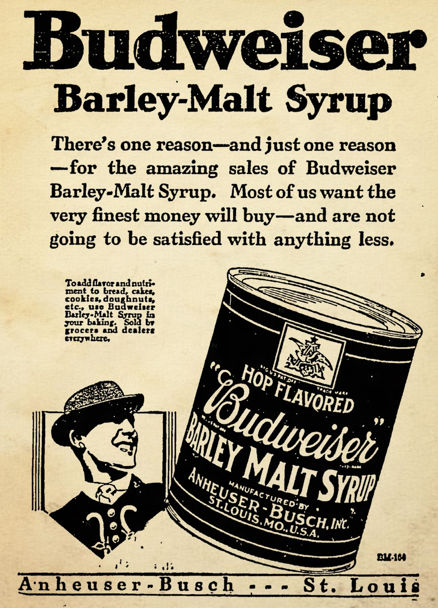

Early Settlers
Many earlier immegrants to North America brought their fermented beverage traditions with them. Early French and Italian
immegrants brought their heritage of making wine, Scot and Irish immegrants
brought along their history of distilled beverages (i.e. whiskey), and German and English immegrants of course brought
their brewing traditions for making beer. In fact, some historical records indicate that the Mayflower had to land
earlier than it was expecting to because they were running low on their ale supply!
Before Industrialization, all beer had to be homebrewed. Familiar crops for the old world were grown to help with this,
such as barley, while new crops were integrated into the making of beer, including corn and pumpkin. Other natural
resources were also used, including cave systems (such as those under St. Louis) to store beer while it fermented and
conditioned. As more and more areas became urbanized, brewers grew from small operations that only supplied a few
barrels to larger ones to sell to city residents.
Industrialization of Brewing
As urban populations in America grew, so did the demand for beer on a larger scale. This, along with technilogical advancements
brought on by the Industrial Revolution, allowered for larger and larger breweries. Agriculture could now grow the large quanities
of barley, corn, and hops needed for these large brewries. Cities such as Milwaukee and St. Louis, with their large German
populations, became major brewing cities. With the advent of refrigeration in the late 1880's, breweries were able to make
a popular new style that was sweeping the world by storm: lager. Lager quickly became the most popular style of beer world wide.
Brewing on a home scale quickly fell as high quaility beer became more affordable and easily available to the masses.
 Picture from an early industrial brewery
Picture from an early industrial brewery
Prohibition
After decades of activisim by various groups, prohibition laws were enacted, with the biggest being the 18th Ammendment. Passed
on January 17, 1920, it created a nationwide ban on the manufacture, sale, and transportation of alcohol. All major breweries
were forced to either shut down or change industries. Anheuser Busch was focued to make malt extract, ice cream, and a
non-alcoholic malt beverage named "Bevo."
As the supply dropped and demand remained the same, people began returning to homebrewing and home distilling. Many of the item
needed were freely available and legal to buy. Indivuduals began making their own beer and distilling their own liquor. This
resulted in a increase in the popularity of hard liquor as it was stronger and took up less space. Beer brewing remained popular,
up until the 21st Admmendment was enacted, ending Prohibition.
However, with the passage of the 21st Ammendment, homebrewing of beer was not make legal again.

Add for Anheuser Busch Malt Syrup during Prohibition
Modern Day
Homebrewing continued as a hobby, though techincally not legal. Many homebrewers at the time were former military vets
who started brewing so they could get the beers they enjoyed while overseas. After Prohibition, beer became very
homogenized with almost all beer being pale lagers. In 1978, Jimmy Carter sigined into law the bill H.R. 1337 which legalized
homebrewing on a federal level. Some states continued to have laws preventing homebrewing with Mississippi and Alabama
being the last two to legalize hombrewing in the early 2000's. As homebrewing grew as a hobby, more and more homebrewers
moved on and started their own breweries, sparking the craft beer movement in America.